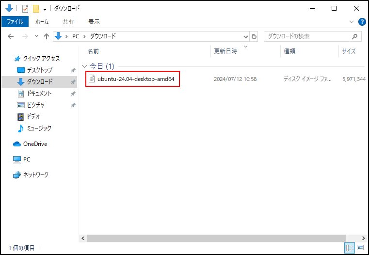
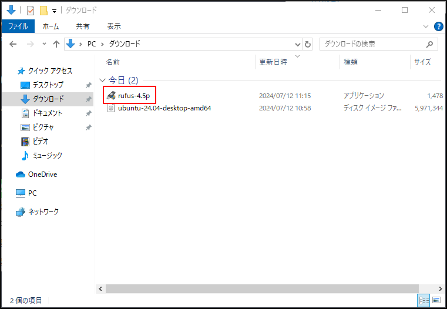
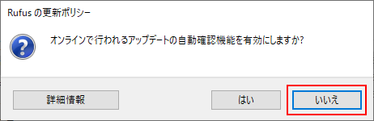
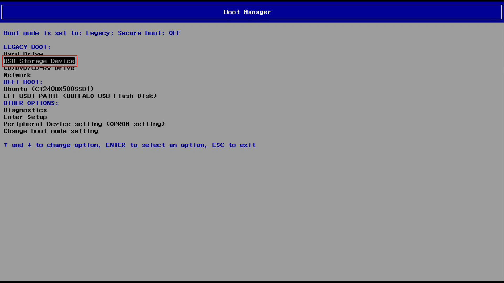
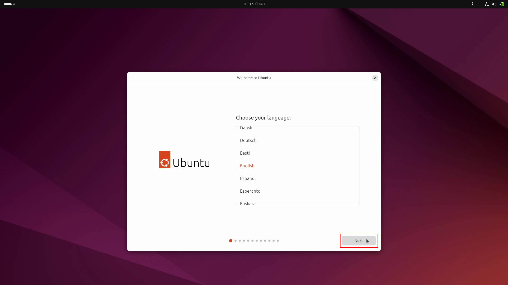
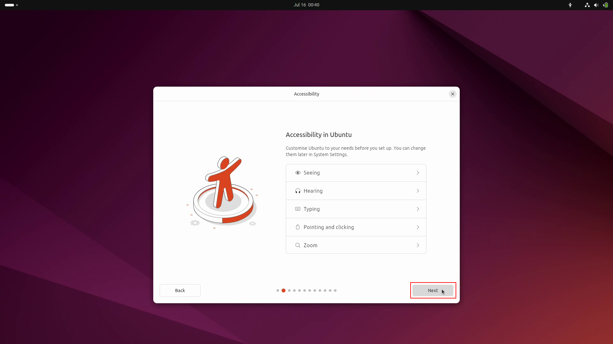
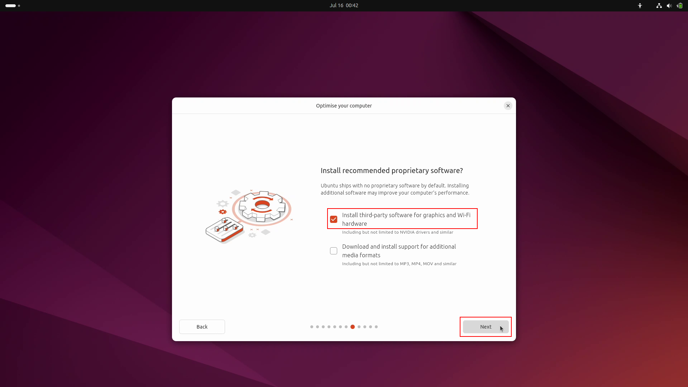
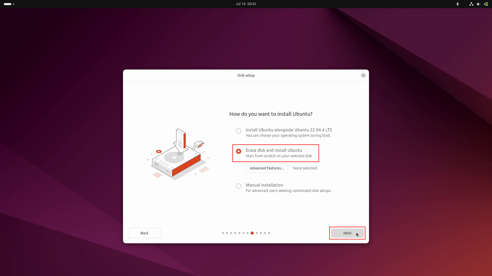
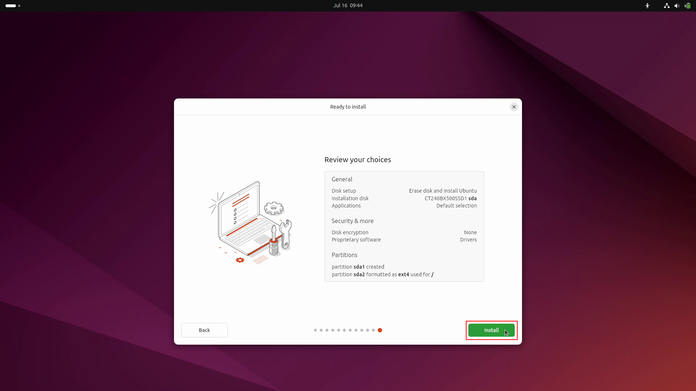

3. Linuxのインストール（PC）¶
Linuxはオープンソースのオペレーティングシステム（OS）です。
PCにはUbuntu Desktop 24.04 LTSをインストールします。
3.1. Linuxのダウンロード¶
Ubuntu Desktop 24.04 LTSのディスクイメージを UbuntuのHP からダウンロードします。
ダウンロードフォルダに保存されます。
3.2. Rufusのダウンロード¶
Rufus（ルーファス）は起動可能なUSBフラッシュドライブを作成することができるソフトウェアです。
Rufusを RufusのHP からダウンロードします。
下のほうにスクロールしていくと、ダウンロードのリンクがあります。
ここから、Portableをダウンロードしてください。

ダウンロードフォルダに保存されます。
3.3. Live USBの作成¶
ダウンロードしたRufusをダブルクリックすると、Rufusが起動します。
[いいえ]ボタンをクリック。
[選択]ボタンをクリック。
Ubuntuのイメージディスクファイルを選択して、[開く]ボタンをクリック。
USBメモリを挿入するとデバイスに認識される。
[スタート]ボタンをクリック。

「ISOイメージモードで書き込む」が選択されていることを確認して、[OK]ボタンをクリック。

[OK]ボタンをクリック。
インストールメディアの作成中。

「準備完了」と表示されたら、[閉じる]ボタンをクリック。
3.4. Linuxのインストール¶
Live USBをPCに挿入してください。
PCの電源ボタンを押したら、[F12]キーを連打し、Boot Managerの画面を表示させる。
[↑]キーと[↓]キーを使って「USB Storagr Device」を選択し、[Enter]キーを押す。
「Try or Install Ubuntu」が選択されていることを確認し、[Enter]キーを押す。
しばらく待つ。
Choose your languageは、「English」が選択されいることを確認し、[Next]ボタンをクリック。
Accessibility in Ubuntuは、デフォルトのまま[Next]ボタンをクリック。
Select your keyboard layoutは、「Japanese」-「Japanese」を選択し、[Next]ボタンをクリック。

Connect to the internetは、「Use wired connection」を選択し、 [Next]ボタンをクリック。

An update is available for the installerは、[Skip]ボタンをクリック。

What do you want to do with Ubuntu?は、「Install Ubuntu」を選択し、[Next]ボタンをクリック。
How would you like to install Ubuntu?は、「Intractive installation」を選択し、[Next]ボタンをクリック。
What apps would you like to install start with? は、「Default selection」を選択し、[Next]ボタンをクリック。
Install recommended proprietary software?は、「Install third-party software …」を選択し、[Next]ボタンをクリック。
How do you want to install Ubuntu?は、「Erase disc and install Ubuntu」を選択し [Next]ボタンをクリック。
Create your accountは、次の通り入力し[Next]ボタンをクリック。
Your name: ubuntu
Your computer’s name: mbc***
Your username: ubuntu
Password: hirate2020
Confirm password: hirate2020
「Require my password to login」にチェック
Select your timezoneは、「Tokyo(Tokyo, Japan)」-「Asia/Tokyo」が選択されいることを確認し、[Next]ボタンをクリック。

Review your choicesは、[Install]ボタンをクリック。
インストールが始まる。

インストールが終了すると、 Installation Completeウィンドウが表示されるので[Restart Now]ボタンをクリック。

しばらく待つ。

「Please remove the installation medium, then press ENTER」というメッセージが表示されるので Live USBを抜いて[Enter]を押す。
3.5. Linuxへのログイン¶
ログイン画面が表示されたら、 パスワードを入力してログインしてください。
{kind=link}
はじめに、各種設定の画面が表示されますが、 全てデフォルトのままとします。
［Skip］ボタンをクリック。
［Next］ボタンをクリック。
［Next］ボタンをクリック。
［Next］ボタンをクリック。
［Done］ボタンをクリック。
Software Updaterが出てきたら、［Install Now］ボタンをクリック。
アップデート中。
アップデートが終了したら、［Restart Now］をクリックして再起動する。
3.6. Linuxの日本語化¶
左下のワッフルメニューをクリックして、アプリケーションを表示してください。
［Settings］をクリック。
［Settings］が起動。
「Region & Language」を選択し、［Manage Installed Languages］をクリック。
［Install］をクリック。
ここでパスワードの入力を求められるので、パスワードを入力。
変更の適用中。
［Language］に日本語（まだグレー）があることを確認し、［Close］をクリック。
［Language］をクリックする。
「日本語」を選択して、［Select］をクリック。
［Restart］をクリックして、再起動。ログアウトするだけなので、再度ログイン。
再起動すると次のウィンドウが出てきます。
「次回から表示しない」にチェックをして、［古い名前のままにする］をクリック。
表示が日本語になっていることを確認してください。
日本語と英語の切り替えは、［半角／全角］で行います。